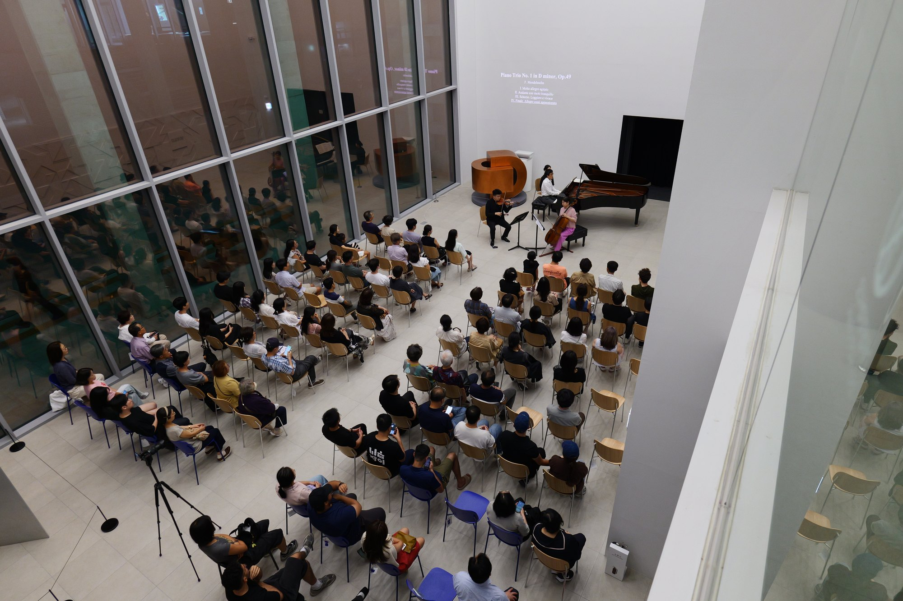
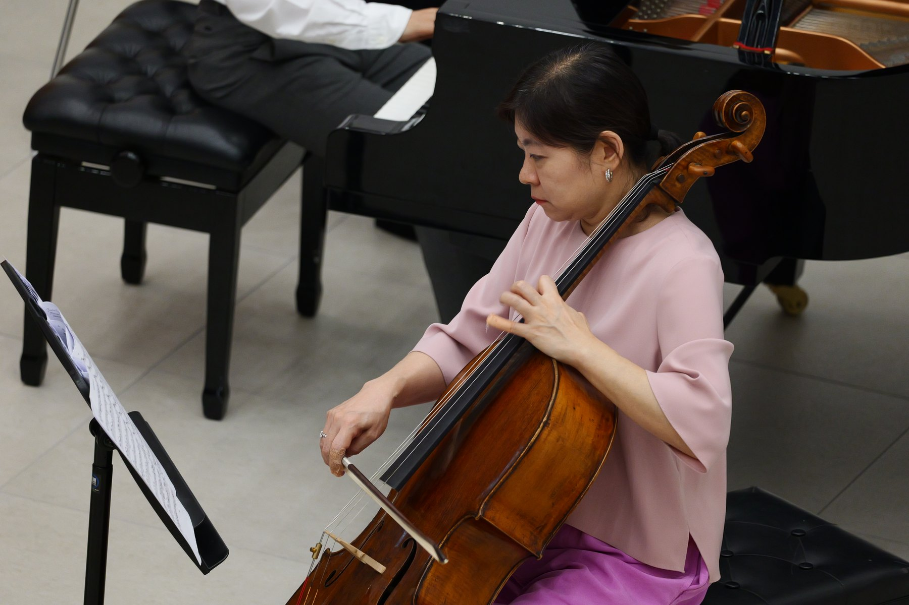
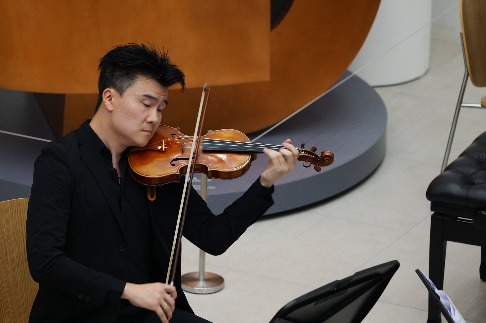
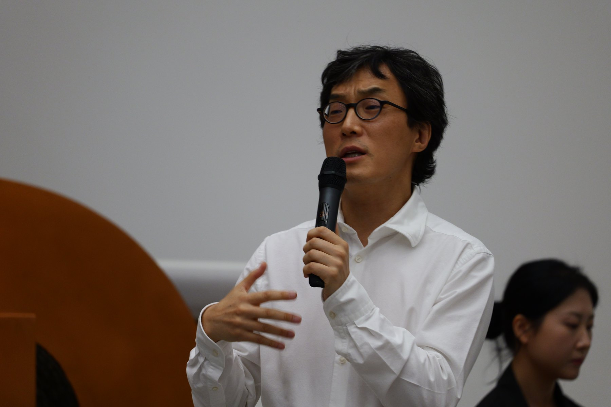

A special concert presented as part of the 26th Daejeon Cosmopolitan Music Festival (DCMF) took place at the KAIST Art Museum on August 7. Presented through the KAIST × DCMF collaboration, the concert featured the IMK Trio, comprising violinist Liang Wang, cellist Meehae Ryo, and pianist Chulhee Yoon, who delivered a compelling evening of chamber music.
The concert carried particular significance as it extended the festival’s theme, “Resonanz und Verklärung” (Resonance and Transfiguration), into the KAIST campus. Moving beyond the setting of a traditional concert hall, the performance created a distinctive meeting point between art and academia, as well as between the local community and international cultural exchange, within one of Korea’s leading institutions of education and research.

For the program, the IMK Trio presented two major works of the Romantic chamber music repertoire. The concert opened with Felix Mendelssohn’s Piano Trio No. 1 in D minor, Op. 49, MWV Q29, followed by Antonín Dvořák’s Piano Trio No. 4 in E minor, Op. 90, B.166, “Dumky.” Mendelssohn’s lyrical melodies and dramatic energy were followed by the distinctive Slavic character of Dvořák’s Dumky, in which folk-inspired rhythms, introspection, and moments of exuberance continually intersect. Together, the two works offered the audience contrasting yet complementary expressions of Romantic chamber music.
Throughout the performance, the three musicians brought their individual musical identities to the stage while maintaining a closely unified ensemble. Cellist Meehae Ryo, Artistic Director of IMK and an active figure in international musical exchange, joined violinist Liang Wang and pianist Chulhee Yoon in an intricate musical dialogue, exchanging phrases with sensitivity and revealing the wide-ranging emotional character of the works.


The concert was further enriched by pianist Chulhee Yoon’s commentary, which offered the audience additional insight into the music. His introductions helped listeners approach the works with greater familiarity and understanding, providing context for their musical background and characteristics while enhancing the overall concert experience.

The audience itself also played an important role in shaping the atmosphere of the evening. Their evident enthusiasm for classical music was reflected in the attentive silence and thoughtful concert etiquette maintained throughout the performance, as well as in their warm and engaged response to the musicians. The combination of distinguished performances and a highly receptive audience created a genuine sense of communication between the stage and the hall.
The KAIST × DCMF collaboration demonstrated how the Daejeon Cosmopolitan Music Festival continues to expand beyond the boundaries of conventional performance venues, reaching new spaces and audiences. By bringing together the international artistry of the IMK Trio and the distinctive setting of KAIST, the concert highlighted new possibilities for classical music while reaffirming the festival’s growing role as a platform connecting Daejeon with the international music community.